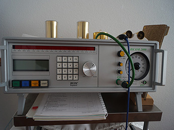

Angebotene Behandlungsarten
Fussreflexzonentherapie
Die Fussreflexzonentherapie behandelt durch die Stimulierung der Füsse verschiedene Organe und Körperzonen.
Reflektorische Lymphbehandlung am Fuss
Reflektorische Lymphbehandlung am Fuss ist eine weitere Behandlungstherapie, die auch sehr wirksam ist.
Das Lymphsystem gehört zu einem Lymphgefässsystem und zu den lymphatischen Organen die bestimmte Abwehrzellen produzieren und sich je nach Erfordernis verändern.
Hanne Marquardt entwickelte aufgrund einiger bekannten Lymphzonen, welche schon seit einiger Zeit in die Behandlungen integriert wurden, im Laufe der Jahre eine für die Reflexzonen des Lymphsystems geeignete Technik, bei der ausschliesslich mit alternierenden Streichungen gearbeitet wird.
Sie entsprechen sowohl in ihrer Qualität als auch in ihrer Funktion den Erfordernissen des Fliesssystems der Lymphe. Die reflektorische Lymphbehandlung an den Füssen ist für die Menschen von heute eine besondere interessante Variante, denn sie wirkt in Bereichen, in denen viele Menschen zeitbedingt grosse Bedürfnisse haben.
Neurolymphatische Reflextherapie nach Chapman und Goodheart
Die Therapie mit neurolymphatischen Reflexpunkten ist eine spezielle Massagetechnik, die sich aus der Osteopathie weiterentwickelt hat.
Sie wird heute im Rahmen der Ortho-Bionomy praktiziert, einem komplexen System manueller Techniken.
Über die neurolymphatischen Reflexpunkte werden Störungen innerer Organe wie auch des Bewegungsapparats positiv beeinflusst.
Ausserdem behandle ich nach der Methode von Ortho Bionomy.
Für mehr Informationen ist das Buch Weiche manuelle Techniken der Ortho-Bionomy: Praktisches Lehrbuch von Klaus G. Weber und Michaela Wiese sehr hilfreich.
Bioresonanz
{kind=link}
Die Wirkung der Bioresonanztherapie erklärt sich durch die modernen Erkenntnisse der Quantenphysik. Die Quantenphysik befasst sich mit den Teilchen- und Welleneigenschaften von Atomen und deren Wechselwirkungen. Vergeben wurde der Nobelpreis für Physik 1984 für die Entdeckung von Energieteilchen, die über 99% aller Materie ausmachen. Diese Energieteilchen vermitteln im Körper elektromagnetische Impulse, die einen großen Teil der körperlichen Abläufe steuern. Das wird auch „Zellkommunikation“ genannt. Jedes Organ hat seine eigene gesunde elektromagnetische Schwingung und ein krankes Organ hat eine davon abweichende Schwingung. Jede zuträgliche oder die Gesundheit schädigende Substanz hat ihre eigene Schwingung.
Laut dem Wissensstand der naturheilkundlichen Erfahrungsmedizin kann man mit dem Bioresonanzgerät anhand von elektromagnetischen Schwingungen testen, in welchem Energiezustand sich der Körper und seine Organe befinden und dadurch die relevanten Schwachpunkte finden. Zusätzlich kann anhand von energetischen Informationen getestet werden, welche Belastungen vorhanden sind und welche Substanzen der Gesundheit des Patienten zuträglich sind.
Laut dem Wissensstand der naturheilkundlichen Erfahrungsmedizin werden durch den fachkundigen Einsatz des Bioresonanzgerätes “kranke” Schwingungen z.B. eines Organs vom Gerät aufgenommen und an den Patienten derart verwandelt zurückgegeben, dass ein Ausgleich des körpereigenen elektromagnetischen Feldes bewirkt wird. Auf ähnliche Art können Belastungen, z.B. durch Allergene, Umweltbelastungen oder Erreger “ausgeleitet” werden. Dadurch wird die ungestörte Zellkommunikation wieder hergestellt und diese ist verantwortlich für Millionen von Aufgaben, die unser Körper ständig zur Regulation der Gesundheit durchführt. Die Testung und Therapie ist schmerzlos und wird als angenehm empfunden.